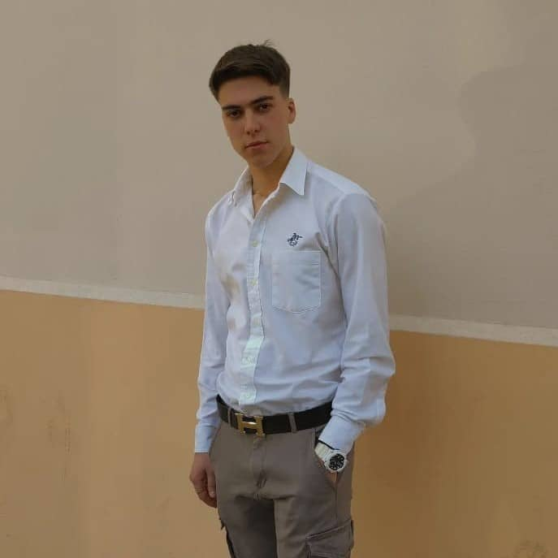

About Author
Small history
Moje ime je Ognjen Savic. Student sam Visoke skole za informacione tehnologije "ICT" Pohadjao sam sredju skolu u Staroj Pazovi pod nazivom "ETS Vuk Karadzic" smer "Pravni tehnicar". Broj indexa mi je 99/22 i ovo je moj sajt za kolokvijum iz WebDizajna.